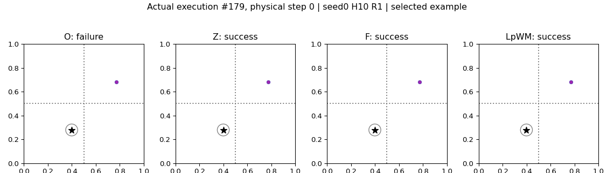

Figure 1. The gap is in the data. Logged transitions constrain one action per state; changing the model or synthesizing targets does not measure the alternative. Fork futures execute both actions from the same restored state and supervise their measured difference.
Abstract
JEPA world models are trained to predict logged transitions but used to compare actions from one state. Behavior data show one action per state, and under a locally additive response model we show they cannot supply this comparison, since a direction the policy never varies at a fixed state leaves the action response unidentified, however many trajectories are logged. We propose fork futures to measure it. Two actions from one restored state give outcomes whose difference cancels the state term and identifies the action response on the sampled span. Fork-JEPA then matches the predicted latent difference to the measured one, anchors the logged successor with behavior prediction, and adds a lookback head keeping the predecessor recoverable, all in training only, and planning is unchanged. On three visual control tasks, behavior-only training leaves the predicted action effect no better than a constant guess, and Fork-JEPA makes it readable and raises planning success by up to 14 points. Where the action response changes across hidden zones, it nearly doubles cross-zone success, and 1,024 fork pairs, 0.5% of the data, beat 1.2M extra behavior steps. Our project is available here.
TL;DR: Measure two futures from one state, learn their difference, and keep the predecessor recoverable. Fork-JEPA improves action comparisons and planning with changes to training only.
Approach
The missing comparison. A world model is trained to predict a logged successor, but a planner asks which of several actions will get closer to a goal. Under a locally additive response model, a policy that never varies an action direction at a fixed state leaves the response along that direction unidentified. More trajectories from the same behavior policy do not resolve this ambiguity. A model can therefore fit logged transitions while ranking alternative actions incorrectly.
Fork futures as measured data. Restore one logged simulator state and execute the logged action and an alternative separately. Encode the resulting observations and subtract their latent representations. Because both branches share the starting state, this difference cancels the state term and isolates the action response on the sampled span. The target is measured in the environment, rather than imagined by the model.
Training framework. Fork-JEPA and why each part is needed: same-state forks isolate the action effect, behavior prediction anchors the outcomes, and lookback preserves predecessor information.
Three complementary training terms. The fork loss matches the predicted latent difference to a stop-gradient measured difference. Behavior prediction anchors the logged successor: otherwise both predictions could shift together while preserving their difference and changing their ranking relative to a goal. A reverse lookback head reconstructs the predecessor from the measured successor and action, encouraging the shared encoder to retain information about where a transition started.
L = Lbase + λfork Lfork + λlook Llook
The base objective retains behavior prediction and SIGReg. The encoder, predictor, and reverse head are optimized jointly. Forks and the reverse head are used only during training; the architecture used for planning and the inference cost stay unchanged.
Planning with Fork-JEPA
We evaluate on TwoRoom (2D navigation), PushT (planar pushing), and OGBench-Cube (3D manipulation). The world models share the same Cross-Entropy Method planner, seed, and evaluation episodes. Planning searches over five action blocks of five steps, with 300 candidates, 30 elites, and 10 iterations. Fork budgets are 1,000 pairs for TwoRoom, 2,000 for PushT, and 1,000 for Cube.
Better comparisons, better plans
Fork-JEPA improves planning success on all three tasks with the same planner. It solves all 50 TwoRoom evaluation episodes, increases PushT success from 92% to 94%, and improves Cube from 66% to 80%. Results are averaged over three seeds; the small PushT gain falls within the reported seed variation.
Planning results. Planning success across three visual control tasks. Bars show means over three seeds, with standard-deviation error bars and component ablations.
Planning success (%), Planning results
Model
TwoRoom
PushT
Cube
LeWM
86
92
66
Fork-JEPA
100
94
80
Gain
+14 pp
+2 pp
+14 pp
The ranking itself also improves. Kendall’s τ rises from 0.67 to 0.94 on TwoRoom and from 0.48 to 0.63 on Cube. These measurements connect the learned action response to the comparison the planner actually makes.
Can the Predictor Read the Action Effect?
Predicting the next state accurately does not guarantee that a model predicts what changes when the action changes. M-ID reads physical state from predicted latents; M-ID-∆ reads the action effect from the difference between two predicted branches. A readout fitted on measured branch differences is frozen and evaluated on predictions, using held-out fork roots and rollout depths one through five.
LeWM predicts state well on TwoRoom, yet its predicted action effect is no better than a constant guess on TwoRoom and Cube. Fork-JEPA raises this score on every task and stays ahead at each measured rollout depth. Cube remains challenging: its action block has more dimensions and fewer fork pairs per direction, and the readable effect is still small.
Local action responses: measured outcomes and predicted responses near walls.
The state maps trace a walk through the doorway between two rooms. Fork-JEPA’s latent sheets meet at that doorway, while LeWM’s maps tear and fold. In the response maps, eight pushes are applied at each free cell. A state-independent action readout draws the same response everywhere; Fork-JEPA captures how nearby walls alter the effect.
Planning Across Hidden Dynamics Zones
To test state-dependent action responses throughout an environment, the regime world divides a square into four hidden zones with different action matrices. The same action produces different displacements in each zone. Models share 10,000 behavior episodes, 1,024 fork pairs, architecture, initialization, and training budget. Evaluation uses 200 fixed start–goal pairs, half of which cross zones.
Cross-zone success (%), manuscript regime-world results; means over 3 seeds
Model
H = 5
H = 10
H = 15
H = 20
LeWM
25
35
30
29
LpWM
44
41
35
28
LpWM + TJ
50
61
54
33
Fork-JEPA
61
68
52
37
At horizon 10, Fork-JEPA reaches 68% cross-zone success versus 35% for LeWM and 41% for LpWM. Separating zones in the latent space alone does not explain planning quality: LpWM’s similarity maps follow zone boundaries, while Fork-JEPA’s fall off smoothly around the reference cell.
Representation maps. Representation maps in the dynamics-regime world. Each panel shows latent cosine similarity to a reference cell across the four zones.
Example trajectories. Selected cross-zone trajectories from the same start to the same goal. These examples illustrate behavior; aggregate success rates are reported above.
Which training term supplies what?
Lookback primarily improves state readability. In the regime world, adding it raises position R² from 0.69 to 0.86 and cross-zone success from 35% to 61%. Fork supervision then improves the predicted action response, reducing predicted-map error from 0.890 to 0.087 and raising success to 68%. A readable latent state is useful, but does not by itself make the predictor compare actions correctly.
Difference or direct supervision? In the regime world, fitting each measured branch separately reaches 67% cross-zone success at H = 10, while matching their difference reaches 68%. Both use the same fork measurements; the difference target explicitly cancels the shared state contribution.
Forks with the encoder frozen
Fork supervision also improves a predictor when the encoder is held fixed. With a frozen DINOv2 encoder, Cube success rises from 82% to 88%; with a frozen LeWM encoder, TwoRoom success rises from 86% to 94%. This isolates the contribution of supervision to the predictor.
Frozen-encoder experiments. Success rates (%); action-effect R² on TwoRoom, averaged over depths 1–5.
Data efficiency in the regime world. Fork-supervised models add 1,024 fork pairs; curves show means and spread over three seeds.
A small amount of targeted data. The 1,024 fork pairs represent 0.5% of the data and outperform adding 1.2 million behavior steps. The result highlights the value of measuring a missing comparison, while the identifiability argument remains local and applies only to the action directions covered by the forks.
Measured Forks and Executed Plans
What does a fork look like in the environment? The examples below show recorded observations and actual closed-loop execution from our evaluation pipeline.
PushT, root episode 13557. Left: restored root. Middle: outcome of the recorded five-step action block. Right: outcome of an alternative five-step block. Both successors are measured environment frames, rather than decoded model predictions.
Closed-loop planning across hidden zones
Each model starts from the same position and targets the same goal. The animation replays saved executed actions in the environment dynamics; it does not visualize imagined latent rollouts. O = LeWM, Z = lookback only, F = Fork-JEPA, and LpWM = the matched sparse baseline.

Selected benefit example from training seed 0. H = 10, replanning every block; CEM uses 300 candidates, 30 elites and 10 iterations. Each action block contains five physical steps. The goal tolerance is 0.05.
Show selected trajectories, including a failure case
Post-evaluation selection: the 25th, 50th and 75th percentiles of final-distance improvement among cross-zone Fork-JEPA successes / LeWM failures, plus a reverse-outcome counterexample. These illustrate behavior and do not estimate aggregate performance.
All 200 fixed starts for seed 0, with no episode exclusion. This single-seed diagnostic is separate from the manuscript’s three-seed aggregate results above.
The identifiability result assumes a locally additive response that is linear in the action and applies on the sampled action span. With nonlinear dynamics, cancellation is approximate and becomes less accurate as fork actions move apart. Collecting forks also requires restoring a starting state, which a real robot can do only approximately.